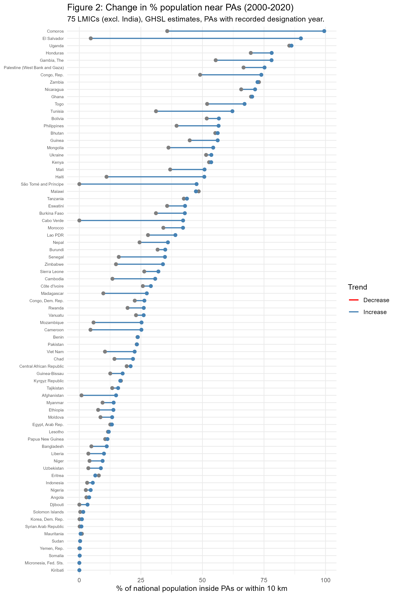
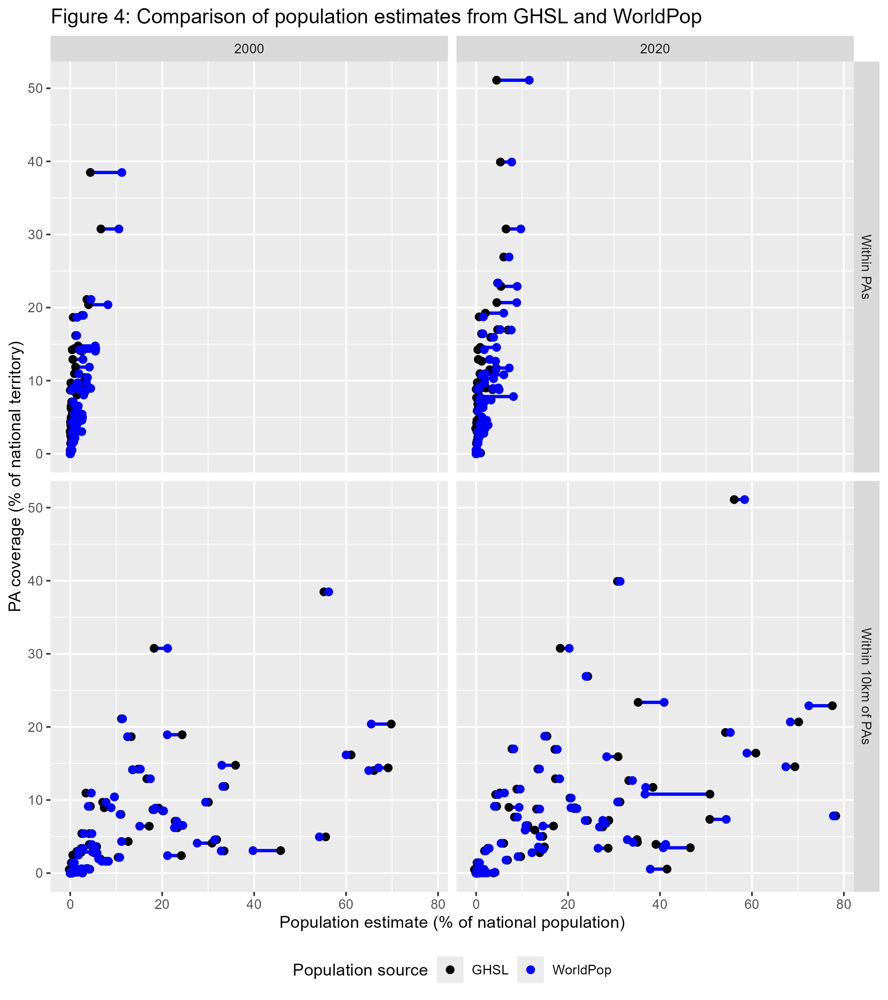

| Table 1: Standard Mean Differences Between GHSL and Worldpop Estimates | ||
|---|---|---|
| 2000 | 2020 | |
| Population within PAs | 0.29 | 0.20 |
| Population within 10km of PAs | 0.09 | 0.08 |
How Many People Live Near Protected Areas in Developing Countries? Estimates from Gridded Population Data (2000–2020)
Abstract
Protected areas (PAs) are the mainstream biodiversity conservation tool. While the socioeconomic impacts of conservation policies remain debated, particularly in developing countries where poverty is predominantly rural, the number of people affected by PAs has never been systematically quantified. We estimate the population living within and near PAs from 2000 to 2020 in 76 countries classified as low- and lower-middle-income by the World Bank. Using the World Database on Protected Areas and two high-resolution gridded population datasets, we find that terrestrial PA coverage in these countries increased from 9.3% to 12.9%, while the share of the population living within 10 km of a PA rose from 16.4% to 21.8%. Excluding India, where PA expansion was minimal, coverage increased from 10.2% to 14.1%, and proximate populations from 26.5% to 33.5%. This substantial demographic expansion challenges the traditional view of conservation as isolated and affecting only small population groups. Policymakers should recognize conservation as a broad societal issue and integrate poverty reduction strategies into conservation planning and governance, particularly as global efforts accelerate towards protecting 30% of terrestrial land by 2030.
Introduction
Protected areas (PAs) are a primary tool for biodiversity conservation, established mainly to achieve ecological goals (Maxwell et al. 2020). However, their creation can have positive or negative effects on local populations (Kandel et al. 2022). PAs restrict access to natural resources (e.g., gathering, hunting, fishing, pharmacopeia), limit land availability, and curb economic activities such as agriculture, livestock, and construction. Conversely, they can provide benefits through compensation measures (e.g., local development projects, cash transfers), job creation (e.g., conservation-related employment, tourism), and ecosystem services (e.g., improved water resources, erosion control, fire prevention).
The impact of conservation on local well-being remains debated (Adams et al. 2004). Yet, no study has systematically quantified the population potentially affected by PAs. While some research has examined population density trends around PAs (Joppa, Loarie, and Pimm 2009; Geldmann et al. 2019), none have assessed the demographic implications of PA creation or expansion.
The proportion of the population directly impacted by PAs is a critical issue for conservation planning, determining the distribution of benefits and burdens across social groups, shaping both local reception and long-term feasibility. This is particularly relevant in low- and lower-middle-income countries, where rural households represent the majority of the population (64% in 2022) and account for a large share of global poverty (Castañeda et al. 2018). Recent reductions in poverty rates in developing countries have largely resulted from declines in rural poverty (Byerlee and Janvry 2008), underscoring the importance of understanding how conservation policies intersect with rural livelihoods. PA expansion is thus not solely an ecological decision but a political one, affecting policy support from local elites, voters, and decision-makers, who balance conservation goals with social welfare mandates (Mangonnet, Kopas, and Urpelainen 2022). Recognizing the demographic extent of PA-affected populations is therefore crucial, as neglecting their socioeconomic realities risks generating resistance and conflict, undermining conservation effectiveness.
The rapid expansion of PAs makes this issue increasingly pressing. From 2000 to 2023, global terrestrial PA coverage expanded by 62%, reaching 17.6% of land area (UNEP-WCMC and IUCN 2024). This growth is set to accelerate with the COP15 commitment to protect 30% of terrestrial land by 2030. While crucial for biodiversity, these efforts also raise urgent questions about socioeconomic impacts. As more land becomes protected, more people will be affected, either through restricted resource access or conservation-driven economic opportunities. Quantifying how many people live near PAs is essential to designing policies that balance ecological and human well-being.
Methods
Study Area
The study focuses on countries classified by the World Bank as low-income and lower-middle-income economies in 2020, based on Gross National Income per capita, adjusted using the Atlas method (Vaggi 2017). We excluded South Sudan and Timor Leste, as they did not exist in 2000. The areas currently corresponding to these two countries were removed from the 2000 dataset.
We set a 10 km threshold to define the treatment group, a standard practice for assessing socioeconomic impacts of protected areas in developing countries (Naidoo et al. 2019; Oldekop et al. 2016). Buffers did not extend across national borders, consistent with the assumption that populations are restricted from crossing them.
Data Sources
The national boundaries were selected using geoBoundaries (v.6.0.0), an open, standardized, and regularly updated dataset (Runfola et al. 2020).
The WDPA (February 2025 edition), managed by UNEP-WCMC in collaboration with IUCN, is the most comprehensive dataset on protected areas, updated monthly with submissions from national governments, non-governmental organizations, landowners, and local communities (Bingham et al. 2019; UNEP-WCMC and IUCN 2023). The status year field records the year in which a site was formally designated, allowing for historical analyses of PA expansion.
The Global Human Settlement Layer (GHSL) draws from Gridded Population of the World (GPWv4) (Center for International Earth Science Information Network-CIESIN-Columbia University 2018). GHSL improves on this by integrating remote sensing and crowdsourced data, using regression models to refine 250m resolution estimates (Freire et al. 2016; Schiavina, Freire, and MacManus 2015). It has been assessed as the most reliable global gridded population dataset by Chen et al. (2020), and we use GHSL population estimates as the default reference unless stated otherwise.
The second-best dataset according to Chen et al. (2020) is Worldpop, which applies a random forest algorithm trained on census data, land cover, infrastructure, elevation, and mobile phone records to produce high-resolution (100m) estimates (Stevens et al. 2015). It supports spatially explicit analyses of human presence near PAs. We use its 2000 and 2020 datasets (WorldPop and CIESIN 2020).
Analytical approach
We used Google Earth Engine (GEE), a cloud-based platform for large-scale environmental analysis (Gorelick et al. 2017), to process high-resolution population estimates within and around protected areas across 75 countries in 2000 and 2020. The computation, executed in iterative batches, handled billions of pixels over 100 hours.
We extracted protected area boundaries from the WDPA, excluding UNESCO-MAB Biosphere Reserves, as is common practice in conservation analyses due to their often limited legal protection (Hanson 2022; Coetzer, Witkowski, and Erasmus 2014). We retained only terrestrial PAs or the terrestrial portion of coastal PAs that intersected geoBoundaries and excluded purely offshore PAs. We generated binary PA presence layers at 100m resolution and created 10-km buffer zones to assess population proximity. We applied zonal statistics to WorldPop data, aggregating results at the national level for small and medium-sized countries (<1,000,000 km²) and at the subnational level for large ones to manage memory constraints.
To assess the consistency of GHSL and WorldPop population estimates, we compared values per country and year. Absolute differences were unsuitable means of comparison, as they are influenced by the estimate levels, which vary significantly across countries and depending on whether we consider PAs or surrounding areas. We used the Standardized Mean Difference (SMD), which standardizes the difference by accounting for variations in scale and dispersion. It is computed as:
\[ SMD = \frac{|\bar{X}_1 - \bar{X}_2|}{\sqrt{\frac{\sigma_1^2 + \sigma_2^2}{2}}} \] where \(\bar{X}_1\) and \(\bar{X}_1\) are the mean population estimates from respectively WorldPop and GHSL, and \(\sigma_1^2\) and \(\sigma_2^2\) are their variances.
We conducted the final analyses in R (R Core Team 2023), using a coherent framework for data processing (Wickham et al. 2019) and packages optimized for graphical visualization (Wickham 2016; Slowikowski 2023; Wilke 2024) and tabular presentation (Iannone et al. 2023). The complete replication package, including the GEE JavaScript code, R code, and output dataset, is available on GitHub (https://github.com/BETSAKA/population_near_protected_areas) and archived on Software Heritage (swh:1:dir:2c8237e16e74d94043e37899aed0de6f262ed420).
Results
Population
Table S1 summarizes the extent of PAs and population proximity to PAs in low- and lower-middle-income countries. It presents the percentage of national land within PAs and the percentage of population within 10 km of PAs for the years 2000 and 2020. Due to its large population and relatively low PA coverage, India has an overwhelming impact on the global average for developing countries. To account for this, we provide two totals: one including India and another excluding it.
Terrestrial PA coverage in developing countries increased from 9.3 % in 2000 (3.4 million km2) to 12.9 % in 2020 (4.7 million km2), while the share of the population living within 10 km of a PA according to GHSL rose from 16.4 % (446.5 million people) to 21.8 % (844.4 million people) over the same period. This global average is largely driven by India, due to its demographic size and almost null PA expansion. For the 75 other countries, PA coverage increased from 10.2 % in 2000 (3.4 million km2) to 14.1 % in 2020 (4.7 million km2), while the share of the population living within 10 km of a PA according to GHSL rose from 26.5 % (441.6 million people) to 33.5 % (829.6 million people).
The expansion of PA coverage was contrasted across countries.Some countries saw substantial PA expansion (e.g., Bhutan, Cambodia), while others experienced minimal growth (e.g., India, Ghana, Côte d’Ivoire). Countries with already high PA coverage in 2000 saw only marginal increases (e.g., Zambia, Tanzania).
Growth of PA Coverage and Population near PAs between 2000 and 2020
Figure 2 presents changes in PA land coverage and the population share living within 10 km of PAs. The diagonal green line represents equal growth in both metrics. Countries above the line experienced faster growth in PA-adjacent populations than in PA coverage.

Most countries fall below the diagonal, where PA spatial expansion outpaced the growth of demographic share of adjacent populations. Lesotho in particular, exhibit large PA expansions with relatively small shifts in population share, indicating that new PAs were primarily established in low-density areas. This reflects the classical trend of PAs to be typically established “high and far”, where pressure for land conversion is lower (Joppa and Pfaff 2009).
In contrast, countries in the top left quarter of Figure 2 experienced a much larger increase in the percentage of their population near PAs than in PA coverage, indicating that new PAs or expansions occurred in relatively high-density areas. Such a pattern is expected in countries with predominantly rural populations, such as Madagascar, Bangladesh, and Mozambique, where PA establishment is more likely to affect human settlements In other cases, such as Haiti, Cameroon, and Liberia, the trend appears to result from deliberate conservation choices to designate PAs in more densely inhabited regions, rather than in remote areas. The zoomed-in portion highlights countries with smaller relative changes, where PA coverage and nearby population increased less than twofold between 2000 and 2020.
Consistency between sources
Table 1 presents the SMDs between GHSL and WorldPop estimates for populations residing within and near protected areas in 2000 and 2020, with higher values indicating greater discrepancies.
There is no universal interpretation of SMD values for comparing different population datasets. Cohen’s rule of thumb suggests an SMD below 0.2 represents a negligible difference, while Austin proposes a more conservative threshold of 0.1 for comparability (Cohen 1988; Austin 2009). Applying this principle, GHSL and WorldPop differ significantly for PA-internal population estimates but align well for populations within 10 km of PAs. GHSL is considered more reliable for high- and low-density settings (Chen et al. 2020).
Figure 4 provides a disaggregated comparison of GHSL and WorldPop estimates. Each segment represents the difference between the two sources for a given country, with black and blue points denoting GHSL and WorldPop, respectively.

For most countries, GHSL and WorldPop estimates align closely, with overlapping black and blue dots on Figure 4. However, some countries exhibit large discrepancies. Table S1 in the appendix details the 15 countries where GHSL and WorldPop estimates differ by more than 5 percentage points and by more than 10%. Notably, WorldPop estimates significantly exceed GHSL in countries such as Comoros, the Republic of Congo, and São Tomé and Príncipe, while GHSL reports higher population shares near PAs than WorldPop in countries such as Ukraine and Zambia. These variations may stem from differences in population allocation methodologies or underlying census data.
Discussion
While this study does not offer new theoretical claims or seek to estimate causal effects of protected area expansion, it addresses an empirical gap with significant implications for both research and policy. By quantifying the number of people living in or near protected areas across the developing world, we provide a baseline understanding of the outreach of conservation policies on neighbourhood communities. This “mere description” (Gerring 2012) is essential for framing future work on the socio-economic impacts of protected areas and for informing policy debates around equitable and effective conservation.
The demographic dynamics around protected areas have been a subject of debate in the literature. Wittemyer et al. (2008) reported accelerated population growth near existing PAs, suggesting an attraction effect, while Joppa, Loarie, and Pimm (2009) argued that such cases were isolated and that population growth near PAs was not disproportionately high overall. Our analysis aligns with the latter, as we find no evidence of increased neighboring population growth in areas where PA coverage has remained stable. Instead, our results indicate that the observed rise in populations near PAs in some countries is primarily driven by the expansion of PA coverage itself. In the cases where population growth outpaces PA expansion, this can be attributed to the selection of denser areas for new PAs. Additionally, a geometric effect may also play a role: as smaller and more irregularly shaped PAs are added to enhance connectivity (Saura et al. 2019) or accommodate political and ecological constraints, the relative extent of surrounding buffer zones increases compared to the total protected area (Schauman et al. 2024).
Our estimation of the share of people living near protected areas is derived from GHSL and WorldPop and depends on their reliability. Several studies have attempted to assess Worldpop’s accuracy, but they all face a key challenge: census data are only available at the administrative unit level, and no alternative dataset provides fine-grained “ground truth” population estimates at low resolution. Consequently, most assessments compare gridded datasets aggregated to administrative units with official census counts or evaluate the spatial consistency across gridded population datasets. The most comprehensive study is Chen et al. (2020), which evaluated four global gridded datasets – WorldPop, HYDE (Goldewijk et al. 2017), GPWv4, and GHSL – across four countries with diverse population distribution patterns. GPWv4 and GHSL were closer to census totals, while WorldPop had larger deviations but the highest spatial consistency with other datasets, suggesting its population allocation model aligns well with relative distribution patterns.
In principle, household surveys such as the Demographic and Health Surveys (DHS) could complement or validate these gridded estimates. naidoo2019 used DHS data from 34 developing countries (2001–2011) to compare households near and far from PAs in assessing conservation impacts. While their objective was not to estimate the proportion of the population near PAs, their supplementary materials report the number of surveyed households located in proximity to PAs. Direct comparisons between our estimates and household survey data are not straightforward, but a rough approximation using data extracted from Naidoo et al. (2019)’s appendix provides a useful reference point. Summing the total number of surveyed households and the number located within 10 km of a PA, we estimate that approximately 22% of households in the DHS sample reside within 10 km buffers, which is broadly in line with our estimates. However, several factors hinder direct comparison. 1. DHS estimates require inverse probability weighting to be population-representative, which cannot be applied using Naidoo et al. (2019)’s appendix data. 2. DHS GPS coordinates represent the centroid of the enumeration area, not individual household locations. 3. Additionally, DHS relies on a two-stage cluster sampling approach, meaning that the survey covers only a limited number of sampled locations (typically a few hundred per country), reducing spatial representativity at a fine scale. 4. DHS also reports household counts, not individual population estimates, meaning that differences in household size could affect comparability. 5. DHS geolocations are intentionally displaced, with rural clusters randomly shifted by up to 10 km, introducing uncertainty in proximity assessments (Skiles et al. 2013). Processing to the raw DHS data would allow to tackle the issues 1., 4., and update this analysis with more surveys. However, obtaining DHS data also involves a vetting procedure with a USAID contractor and, at the time of writing, the foreign assistance programs have been indefinitely suspended and it is unknown when or if it will be resumed.
Conclusion
Our analysis provides an assessment of the population living within or in the immediate surroundings of protected areas following their expansion in low- and lower-middle-income countries. Between 2000 and 2020, PA coverage in these countries grew from 9.3% to 12.9%, while the share of people living within 10 km of a PA increased from 16.4% to 21.8%. This global trend is strongly influenced by India, where limited PA expansion and a large population shape the overall figures. Excluding India, PA coverage rose from 10.2% to 14.1%, and the proportion of the population near PAs increased from 26.5% to 33.5%. These figures highlight the extent to which conservation policies affect human populations and the need to address their socio-economic implications. Balancing ecological goals with the well-being and rights of nearby communities will become ever more critical as governments pursue accelerated PA expansion to meet global 30% targets. Policymakers should explicitly integrate poverty alleviation and rural livelihood support measures into conservation frameworks, for instance through participatory governance, compensation mechanisms, and targeted rural development investments around protected areas.
Although our data and method have inherent limitations, it relies on the most consistent and scalable approach currently available for estimating demographic exposure to conservation policies. Future improvements in population mapping and survey integration could refine these estimates, but we believe that our findings offer a useful first step in quantifying the human dimensions of PA expansion at a global level.
References
Adams, William. M., Ros Aveling, Dan Brockington, Barney Dickson, Jo Elliott, Jon Hutton, Dilys Roe, Bhaskar Vira, and William Wolmer. 2004. “Biodiversity Conservation and the Eradication of Poverty.” Science 306 (5699): 1146–49. https://doi.org/10.1126/science.1097920.
Austin, Peter C. 2009. “Balance Diagnostics for Comparing the Distribution of Baseline Covariates Between Treatment Groups in Propensity-Score Matched Samples.” Statistics in Medicine 28 (25): 3083–3107.
Bingham, Heather C., Diego Juffe Bignoli, Edward Lewis, Brian MacSharry, Neil D. Burgess, Piero Visconti, Marine Deguignet, Murielle Misrachi, Matt Walpole, and Jessica L. Stewart. 2019. “Sixty Years of Tracking Conservation Progress Using the World Database on Protected Areas.” Nature Ecology & Evolution 3 (5): 737743. https://idp.nature.com/authorize/casa?redirect_uri=https://www.nature.com/articles/s41559-019-0869-3&casa_token=Zmluq7JmhxUAAAAA:Id6cAJrCDpmtydpiga8LlmkB5wb9a1O_bwCGwCeA1gz314-F6VT5ekCOeVMJo_Zrpbh_uuoXf0fwD3Txjg.
Byerlee, Derek, and Alain de Janvry, eds. 2008. World Developpement Report 2008: Agriculture for Development. Washington DC: World Bank.
Castañeda, Andrés, Dung Doan, David Newhouse, Minh Cong Nguyen, Hiroki Uematsu, and João Pedro Azevedo. 2018. “A New Profile of the Global Poor.” World Development 101 (January): 250–67. https://doi.org/10.1016/j.worlddev.2017.08.002.
Center for International Earth Science Information Network-CIESIN-Columbia University. 2018. “Gridded Population of the World, Version 4 (GPWv4): Population Density, Revision 11.” Palisades, NY, USA: NASA Socioeconomic Data; Applications Center (SEDAC). https://sedac.ciesin.columbia.edu/data/set/gpw-v4-population-density-rev11.
Chen, Ruxia, Huimin Yan, Fang Liu, Wenpeng Du, and Yanzhao Yang. 2020. “Multiple Global Population Datasets: Differences and Spatial Distribution Characteristics.” ISPRS International Journal of Geo-Information 9 (11): 637. https://doi.org/10.3390/ijgi9110637.
Coetzer, Kaera L., Edward T. F. Witkowski, and Barend F. N. Erasmus. 2014. “Reviewing Biosphere Reserves Globally: Effective Conservation Action or Bureaucratic Label?” Biological Reviews 89 (1): 82–104. https://doi.org/10.1111/brv.12044.
Cohen, Jacob. 1988. Statistical Power Analysis for the Behavioral Sciences. routledge.
Freire, Sergio, Kytt MacManus, Martino Pesaresi, Erin Doxsey-Whitfield, and Jane Mills. 2016. “Development of New Open and Free Multi-Temporal Global Population Grids at 250 m Resolution.” Population 250: 33.
Geldmann, Jonas, Andrea Manica, Neil D. Burgess, Lauren Coad, and Andrew Balmford. 2019. “A Global-Level Assessment of the Effectiveness of Protected Areas at Resisting Anthropogenic Pressures.” Proceedings of the National Academy of Sciences 116 (46): 23209–15. https://doi.org/10.1073/pnas.1908221116.
Gerring, John. 2012. “Mere Description.” British Journal of Political Science 42 (4): 721746.
Goldewijk, K. K., A. Beusen, J. Doelman, and E. Stehfest. 2017. “Anthropogenic Land Use Estimates for the Holocene–HYDE 3.2.” Earth System Science Data 9: 927–53. https://doi.org/10.5194/essd-9-927-2017.
Gorelick, Noel, Matt Hancher, Mike Dixon, Simon Ilyushchenko, David Thau, and Rebecca Moore. 2017. “Google Earth Engine: Planetary-Scale Geospatial Analysis for Everyone.” Remote Sensing of Environment 202: 1827. https://www.sciencedirect.com/science/article/pii/S0034425717302900.
Hanson, Jeffrey O. 2022. “Wdpar: Interface to the World Database on Protected Areas.” Journal of Open Source Software 7 (78): 4594. https://doi.org/10.21105/joss.04594.
Iannone, Richard, Joe Cheng, Barret Schloerke, Ellis Hughes, Alexandra Lauer, and JooYoung Seo. 2023. “Gt: Easily Create Presentation-Ready Display Tables.” https://CRAN.R-project.org/package=gt.
Joppa, Lucas N., Scott R. Loarie, and Stuart L. Pimm. 2009. “On Population Growth Near Protected Areas.” PLOS ONE 4 (1): e4279. https://doi.org/10.1371/journal.pone.0004279.
Joppa, Lucas N., and Alexander Pfaff. 2009. “High and Far: Biases in the Location of Protected Areas.” PLOS ONE 4 (12): e8273. https://doi.org/10.1371/journal.pone.0008273.
Kandel, Pratikshya, Ram Pandit, Benedict White, and Maksym Polyakov. 2022. “Do Protected Areas Increase Household Income? Evidence from a Meta-Analysis.” World Development 159 (November): 106024. https://doi.org/10.1016/j.worlddev.2022.106024.
Mangonnet, Jorge, Jacob Kopas, and Johannes Urpelainen. 2022. “Playing Politics with Environmental Protection: The Political Economy of Designating Protected Areas.” The Journal of Politics 84 (3): 1453–68. https://doi.org/10.1086/718978.
Maxwell, Sean L., Victor Cazalis, Nigel Dudley, Michael Hoffmann, Ana SL Rodrigues, Sue Stolton, Piero Visconti, Stephen Woodley, Naomi Kingston, and Edward Lewis. 2020. “Area-Based Conservation in the Twenty-First Century.” Nature 586 (7828): 217227.
Naidoo, R., D. Gerkey, D. Hole, A. Pfaff, A. M. Ellis, C. D. Golden, D. Herrera, et al. 2019. “Evaluating the Impacts of Protected Areas on Human Well-Being Across the Developing World.” Science Advances 5 (4): eaav3006. https://doi.org/10.1126/sciadv.aav3006.
Oldekop, Johan A., George Holmes, W. Edwin Harris, and Karl L. Evans. 2016. “A Global Assessment of the Social and Conservation Outcomes of Protected Areas.” Conservation Biology 30 (1): 133141.
R Core Team. 2023. R: A Language and Environment for Statistical Computing. Vienna, Austria: R Foundation for Statistical Computing. https://www.R-project.org/.
Runfola, Daniel, Austin Anderson, Heather Baier, Matt Crittenden, Elizabeth Dowker, Sydney Fuhrig, Seth Goodman, et al. 2020. “geoBoundaries: A Global Database of Political Administrative Boundaries.” PLOS ONE 15 (4): e0231866. https://doi.org/10.1371/journal.pone.0231866.
Saura, Santiago, Bastian Bertzky, Lucy Bastin, Luca Battistella, Andrea Mandrici, and Grégoire Dubois. 2019. “Global Trends in Protected Area Connectivity from 2010 to 2018.” Biological Conservation 238: 108183.
Schauman, Santiago A., Josep Peñuelas, Esteban G. Jobbágy, and Germán Baldi. 2024. “The Geometry of Global Protected Lands.” Nature Sustainability 7 (1): 82–89. https://doi.org/10.1038/s41893-023-01243-0.
Schiavina, M., S. Freire, and K. MacManus. 2015. “GHS Population Grid, Derived from GPW4, Multitemporal (1975, 1990, 2000, 2015).” Ispra, Italy: European Commission, Joint Research Centre, JRC Data Catalogue. https://ghsl.jrc.ec.europa.eu/data.php.
Skiles, Martha Priedeman, Clara R. Burgert, Siân L. Curtis, and John Spencer. 2013. “Geographically Linking Population and Facility Surveys: Methodological Considerations.” Population Health Metrics 11 (1): 14. http://www.biomedcentral.com/content/pdf/1478-7954-11-14.pdf.
Slowikowski, Kamil. 2023. “Ggrepel: Automatically Position Non-Overlapping Text Labels with ’Ggplot2’.” https://CRAN.R-project.org/package=ggrepel.
Stevens, Forrest R., Andrea E. Gaughan, Catherine Linard, and Andrew J. Tatem. 2015. “Disaggregating Census Data for Population Mapping Using Random Forests with Remotely-Sensed and Ancillary Data.” PloS One 10 (2): e0107042. https://journals.plos.org/plosone/article?id=10.1371/journal.pone.0107042.
UNEP-WCMC and IUCN. 2024. Protected Planet Report 2024. Cambridge, United Kingdom; Gland, Switzerland: UNEP-WCMC; IUCN.
UNEP-WCMC, and IUCN. 2023. Protected Planet: The World Database on Protected Areas (WDPA). UNEP-WCMC and IUCN. Cambridge, UK. www.protectedplanet.net.
Vaggi, Gianni. 2017. “The Rich and the Poor: A Note on Countries’ Classification.” PSL Quarterly Review 70 (279). https://papers.ssrn.com/sol3/papers.cfm?abstract_id=3100742.
Wickham, Hadley. 2016. “Ggplot2: Elegant Graphics for Data Analysis.” https://ggplot2.tidyverse.org.
Wickham, Hadley, Mara Averick, Jennifer Bryan, Winston Chang, Lucy D’Agostino McGowan, Romain François, Garrett Grolemund, et al. 2019. “Welcome to the Tidyverse” 4: 1686. https://doi.org/10.21105/joss.01686.
Wilke, Claus O. 2024. “Cowplot: Streamlined Plot Theme and Plot Annotations for ’Ggplot2’.” https://CRAN.R-project.org/package=cowplot.
Wittemyer, George, Paul Elsen, William T. Bean, A. Coleman O. Burton, and Justin S. Brashares. 2008. “Accelerated Human Population Growth at Protected Area Edges.” Science 321 (5885): 123–26. https://doi.org/10.1126/science.1158900.
WorldPop, and CIESIN. 2020. “Population Counts 20002020 UN-Adjusted Unconstrained 100m.” www.worldpop.org/doi/10.5258/SOTON/WP00660.
Appendix
| Table S1: PA Coverage and Population Proximity (2000-2020) | ||||||||||||
|---|---|---|---|---|---|---|---|---|---|---|---|---|
| Percentage of land and population within and near protected areas | ||||||||||||
| % land within (WDPA) | % population (GHSL) | % population (WorldPop) | ||||||||||
| Country | within PAs | 10km of PAs | within PAs | 10km of PAs | within PAs | 10km of PAs | ||||||
| 2000 | 2020 | 2000 | 2020 | 2000 | 2020 | 2000 | 2020 | 2000 | 2020 | 2000 | 2020 | |
| Total | 9.3 | 12.9 | 21.0 | 27.2 | 0.9 | 1.8 | 16.4 | 21.8 | 1.8 | 2.7 | 16.2 | 21.8 |
| Total without India | 10.2 | 14.1 | 22.9 | 29.5 | 1.4 | 2.8 | 26.5 | 33.5 | 2.8 | 4.2 | 26.1 | 33.6 |
| Afghanistan | 0.1 | 3.7 | 0.6 | 6.0 | 0.1 | 1.2 | 0.6 | 14.9 | 0.1 | 1.1 | 0.6 | 13.6 |
| Angola | 5.4 | 10.8 | 9.0 | 15.8 | 0.4 | 1.0 | 2.5 | 4.3 | 0.9 | 1.3 | 3.0 | 5.0 |
| Bangladesh | 4.0 | 4.5 | 9.8 | 17.8 | 0.3 | 0.5 | 5.0 | 18.8 | 0.6 | 1.0 | 4.6 | 18.3 |
| Benin | 23.7 | 23.7 | 54.9 | 54.9 | 1.7 | 1.8 | 25.7 | 25.7 | 5.2 | 5.7 | 25.8 | 26.5 |
| Bhutan | 38.5 | 51.1 | 72.0 | 80.5 | 4.4 | 4.5 | 55.2 | 56.1 | 11.2 | 11.6 | 56.2 | 58.4 |
| Bolivia | 20.9 | 23.3 | 33.4 | 38.4 | 22.2 | 31.0 | 61.3 | 68.8 | 21.1 | 25.8 | 58.3 | 63.0 |
| Burkina Faso | 14.2 | 16.6 | 33.3 | 38.8 | 3.3 | 4.0 | 31.0 | 42.7 | 6.1 | 7.8 | 31.5 | 45.8 |
| Burundi | 5.4 | 5.4 | 40.8 | 41.4 | 0.3 | 0.3 | 40.1 | 44.7 | 2.8 | 2.6 | 39.6 | 43.9 |
| Cabo Verde | 0.0 | 18.4 | 0.0 | 94.9 | 0.0 | 8.8 | 0.0 | 96.0 | 0.0 | 14.1 | 0.0 | 94.6 |
| Cambodia | 14.1 | 39.9 | 34.3 | 68.5 | 2.1 | 5.3 | 13.5 | 30.7 | 2.4 | 7.7 | 13.6 | 31.3 |
| Cameroon | 5.2 | 11.1 | 13.0 | 25.4 | 0.1 | 3.3 | 4.5 | 25.1 | 0.9 | 6.0 | 5.2 | 24.4 |
| Central African Republic | 14.0 | 14.0 | 21.8 | 21.9 | 0.6 | 0.6 | 19.8 | 21.3 | 2.0 | 1.8 | 22.2 | 23.1 |
| Chad | 11.4 | 13.9 | 14.7 | 18.4 | 3.8 | 3.8 | 11.8 | 13.6 | 6.5 | 7.7 | 11.7 | 16.8 |
| Comoros | 0.8 | 33.0 | 6.5 | 97.8 | 0.5 | 11.9 | 36.1 | 99.5 | 1.7 | 38.7 | 21.7 | 98.9 |
| Congo, Dem. Rep. | 9.0 | 14.9 | 14.9 | 23.0 | 2.5 | 6.1 | 23.3 | 28.1 | 3.9 | 7.3 | 22.7 | 24.5 |
| Congo, Rep. | 9.3 | 36.5 | 16.3 | 53.1 | 0.7 | 13.2 | 49.2 | 74.3 | 3.3 | 26.9 | 31.7 | 66.4 |
| Côte d'Ivoire | 21.5 | 21.7 | 69.5 | 70.0 | 5.1 | 5.6 | 69.7 | 71.6 | 10.0 | 9.3 | 71.4 | 72.6 |
| Djibouti | 0.0 | 1.3 | 0.0 | 8.3 | 0.0 | 0.0 | 0.0 | 1.4 | 0.0 | 0.8 | 0.0 | 7.8 |
| Egypt, Arab Rep. | 4.3 | 11.2 | 6.5 | 15.7 | 0.1 | 0.3 | 12.6 | 13.4 | 0.4 | 0.5 | 11.2 | 11.3 |
| El Salvador | 0.1 | 8.6 | 8.2 | 80.7 | 0.0 | 2.9 | 4.2 | 90.2 | 0.0 | 3.8 | 4.2 | 90.3 |
| Eritrea | 0.0 | 0.0 | 0.0 | 1.3 | 0.0 | 0.0 | 0.0 | 0.9 | 0.0 | 0.0 | 0.0 | 1.6 |
| Eswatini | 4.1 | 4.4 | 28.3 | 38.4 | 0.2 | 0.1 | 34.1 | 41.8 | 1.6 | 1.5 | 30.7 | 39.5 |
| Ethiopia | 10.4 | 17.0 | 17.6 | 27.2 | 3.2 | 7.0 | 9.8 | 17.4 | 3.8 | 7.7 | 9.8 | 17.8 |
| Gambia, The | 5.1 | 8.0 | 32.2 | 61.8 | 0.2 | 1.0 | 57.2 | 79.2 | 2.8 | 8.8 | 55.8 | 78.9 |
| Ghana | 14.7 | 14.9 | 56.9 | 57.2 | −1.2 | −0.2 | 68.2 | 69.0 | 6.2 | 5.0 | 69.1 | 68.9 |
| Guinea | 7.9 | 23.7 | 35.9 | 52.3 | 2.6 | 14.9 | 46.7 | 57.1 | 4.0 | 15.4 | 47.3 | 59.0 |
| Guinea-Bissau | 18.0 | 24.4 | 40.8 | 49.9 | 2.8 | 5.8 | 16.7 | 20.7 | 5.8 | 9.4 | 20.9 | 25.3 |
| Haiti | 2.2 | 7.4 | 16.6 | 46.0 | 0.9 | 3.3 | 10.4 | 50.8 | 1.0 | 3.2 | 10.8 | 54.4 |
| Honduras | 20.4 | 23.0 | 54.6 | 63.7 | 4.0 | 5.6 | 67.5 | 76.3 | 8.2 | 9.2 | 65.5 | 74.1 |
| India | 0.2 | 0.5 | 1.1 | 2.4 | 0.0 | 0.0 | 0.5 | 1.1 | 0.1 | 0.1 | 0.5 | 1.1 |
| Indonesia | 11.5 | 11.9 | 31.5 | 33.9 | 0.2 | 0.5 | 32.1 | 34.6 | 1.7 | 2.2 | 31.7 | 34.6 |
| Kenya | 10.8 | 12.7 | 32.4 | 38.2 | 2.2 | 2.7 | 57.0 | 59.4 | 4.0 | 4.2 | 59.4 | 60.7 |
| Kiribati | 0.0 | 4.6 | 0.0 | 4.6 | 0.0 | 0.0 | 0.0 | 0.0 | 0.0 | 0.0 | 0.0 | 0.0 |
| Korea, Dem. Rep. | 0.0 | 0.0 | 0.0 | 1.1 | 0.0 | 0.0 | 0.0 | 0.4 | 0.0 | 0.0 | 0.0 | 0.4 |
| Kyrgyz Republic | 6.4 | 6.7 | 21.6 | 23.3 | 0.6 | 0.6 | 17.0 | 16.7 | 1.2 | 1.1 | 15.1 | 14.7 |
| Lao PDR | 8.9 | 15.9 | 23.1 | 40.0 | 1.4 | 3.2 | 19.2 | 31.0 | 1.9 | 3.8 | 18.7 | 28.6 |
| Lesotho | 2.0 | 23.5 | 19.0 | 40.1 | 0.3 | 8.6 | 10.9 | 27.2 | 0.8 | 9.9 | 11.2 | 25.8 |
| Liberia | 1.7 | 3.7 | 6.6 | 12.3 | 0.0 | 0.9 | 3.7 | 10.0 | 0.2 | 1.8 | 3.5 | 10.2 |
| Madagascar | 4.3 | 12.8 | 14.0 | 35.8 | 0.2 | 4.8 | 7.7 | 41.7 | 1.6 | 8.0 | 8.4 | 40.2 |
| Malawi | 18.0 | 18.7 | 61.2 | 63.2 | 1.9 | 2.0 | 63.3 | 63.9 | 2.2 | 2.5 | 62.6 | 62.4 |
| Mali | 3.3 | 7.5 | 9.1 | 15.9 | 3.4 | 12.1 | 36.7 | 50.7 | 4.5 | 11.9 | 36.2 | 52.0 |
| Mauritania | 0.6 | 0.6 | 1.0 | 1.0 | 0.4 | 0.1 | 1.2 | 0.8 | 0.4 | 0.1 | 1.1 | 0.7 |
| Micronesia, Fed. Sts. | 0.0 | 0.0 | 0.0 | 0.0 | 0.0 | 0.0 | 0.0 | 0.0 | 0.0 | 0.0 | 0.0 | 0.0 |
| Moldova | 9.1 | 9.1 | 86.1 | 86.4 | 1.4 | 1.6 | 91.5 | 91.5 | 6.3 | 6.0 | 83.2 | 82.1 |
| Mongolia | 14.8 | 19.7 | 23.4 | 32.1 | 1.7 | 2.2 | 36.2 | 54.4 | 5.5 | 6.1 | 33.1 | 55.5 |
| Morocco | 0.6 | 2.2 | 2.6 | 11.9 | 0.1 | 1.0 | 6.3 | 20.4 | 0.2 | 1.5 | 5.8 | 19.5 |
| Mozambique | 21.1 | 29.4 | 33.2 | 42.9 | 3.6 | 8.8 | 11.5 | 28.8 | 4.5 | 9.8 | 11.9 | 28.2 |
| Myanmar | 1.6 | 6.6 | 7.2 | 18.1 | 0.2 | 0.6 | 7.7 | 12.0 | 0.4 | 1.1 | 8.0 | 12.7 |
| Nepal | 18.9 | 23.5 | 35.2 | 42.8 | 2.6 | 5.5 | 24.4 | 35.8 | 2.9 | 5.6 | 21.2 | 41.6 |
| Nicaragua | 14.0 | 21.5 | 42.2 | 55.8 | 2.5 | 5.4 | 65.0 | 70.3 | 5.5 | 9.3 | 65.0 | 70.5 |
| Niger | 7.4 | 17.0 | 9.5 | 20.7 | 2.1 | 5.0 | 5.0 | 10.3 | 2.7 | 5.3 | 6.0 | 10.7 |
| Nigeria | 12.0 | 13.3 | 57.6 | 59.4 | 1.5 | 2.2 | 51.0 | 51.7 | 4.4 | 4.6 | 53.0 | 54.0 |
| Pakistan | 7.2 | 7.7 | 15.2 | 17.1 | 1.3 | 1.4 | 11.3 | 11.4 | 1.7 | 1.7 | 10.8 | 11.1 |
| Papua New Guinea | 2.9 | 3.7 | 8.6 | 11.5 | 1.2 | 1.2 | 11.1 | 11.8 | 1.5 | 1.7 | 11.6 | 12.7 |
| Philippines | 8.7 | 15.9 | 30.3 | 54.6 | 3.5 | 4.7 | 35.5 | 57.1 | 3.6 | 5.2 | 36.3 | 58.3 |
| Rwanda | 8.7 | 9.3 | 29.7 | 41.3 | 0.0 | 0.2 | 21.0 | 30.7 | 0.3 | 0.7 | 21.5 | 31.5 |
| Senegal | 25.5 | 26.5 | 60.1 | 61.4 | 3.1 | 4.1 | 39.5 | 62.1 | 7.6 | 9.4 | 40.8 | 63.4 |
| Sierra Leone | 9.4 | 13.0 | 50.3 | 60.1 | 2.5 | 5.6 | 59.2 | 68.5 | 5.8 | 9.1 | 58.9 | 68.7 |
| Solomon Islands | 1.0 | 1.5 | 2.1 | 11.6 | 5.2 | 5.7 | 4.9 | 3.6 | 0.1 | 0.2 | 2.4 | 8.1 |
| Somalia | 0.0 | 0.0 | 0.1 | 0.2 | 0.0 | 0.0 | 0.2 | 0.2 | 0.0 | 0.0 | 0.1 | 0.1 |
| Sudan | 1.4 | 1.4 | 1.8 | 2.0 | 0.1 | 0.1 | 0.2 | 0.2 | 0.4 | 0.3 | 0.6 | 0.5 |
| Syrian Arab Republic | 0.0 | 0.1 | 0.2 | 0.9 | 0.0 | 0.0 | 0.1 | 0.6 | 0.0 | 0.0 | 0.1 | 0.6 |
| São Tomé and Príncipe | 0.0 | 32.5 | 0.0 | 93.8 | 0.0 | 0.1 | 0.0 | 49.5 | 0.0 | 9.1 | 0.0 | 58.2 |
| Tajikistan | 18.7 | 21.8 | 35.1 | 40.9 | 0.6 | 0.7 | 13.3 | 15.7 | 1.5 | 1.7 | 12.5 | 15.2 |
| Tanzania | 36.4 | 39.9 | 65.8 | 69.1 | 4.9 | 6.1 | 60.5 | 66.0 | 8.6 | 9.7 | 61.3 | 67.5 |
| Togo | 12.2 | 12.8 | 62.8 | 66.4 | 3.8 | 4.4 | 49.9 | 65.3 | 5.9 | 6.3 | 49.9 | 66.5 |
| Tunisia | 5.1 | 8.0 | 18.1 | 33.5 | 0.1 | 0.3 | 26.1 | 49.7 | 0.8 | 1.5 | 27.6 | 58.5 |
| Uganda | 13.2 | 15.2 | 72.0 | 74.2 | 2.3 | 2.8 | 85.6 | 86.4 | 6.7 | 7.3 | 86.0 | 87.0 |
| Ukraine | 18.1 | 18.1 | 82.5 | 82.5 | 1.2 | 1.2 | 89.5 | 89.9 | 9.6 | 9.2 | 85.6 | 86.4 |
| Uzbekistan | 2.9 | 7.9 | 8.1 | 17.0 | 0.1 | 0.3 | 2.4 | 10.0 | 0.9 | 1.1 | 4.9 | 10.6 |
| Vanuatu | 3.9 | 3.9 | 37.0 | 37.0 | 0.0 | −0.1 | −5.8 | −11.2 | 0.6 | 0.7 | 48.1 | 55.2 |
| Viet Nam | 1.9 | 7.6 | 14.9 | 40.1 | 0.5 | 1.1 | 9.1 | 20.4 | 0.9 | 2.0 | 10.4 | 21.9 |
| Yemen, Rep. | 1.0 | 1.1 | 1.5 | 2.6 | 1.0 | 2.0 | 3.1 | 10.4 | 1.0 | 2.0 | 3.2 | 10.4 |
| Zambia | 38.1 | 38.9 | 71.3 | 72.1 | 10.5 | 10.6 | 76.4 | 75.6 | 17.4 | 16.2 | 74.2 | 72.7 |
| Zimbabwe | 17.8 | 28.2 | 38.1 | 49.8 | 1.6 | 6.8 | 31.6 | 39.8 | 4.4 | 9.1 | 32.0 | 42.8 |
| West Bank and Gaza | NA | NA | NA | NA | 0.5 | 0.4 | 60.9 | 62.5 | NA | NA | NA | NA |
| Source: Analysis based on WDPA, WorldPop & GHSL data (2000-2020) | ||||||||||||